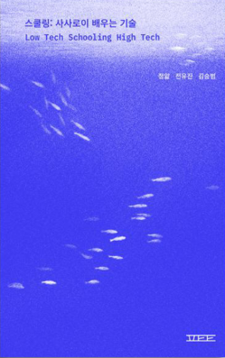

N개의 맥락
김승범 (Seungbum Kim)
개인적인 맥락
- Personal이란 결국 나에게 중요한 맥락으로 재해석, 창작, 바라보기를 하는 것
- 동일한 책도 결코 한 방향으로만 읽히지 않는다.
- 한 사람이 여러 방식으로 읽는 경험을 하기도 한다.
- 상황에 따라 최적의 요약은 달라질 수 있다.
- 최근 스쿨링 책 에세이
<스쿨링: 사사로이 배우는 기술>, 2025, 펨텍톡 (https://femtechtalk.com/)
 에서 그 내용을 담았다.
- 그래서 맥락을 (나에게 의미가 생길 방향으로) 바꾸는 방법은?
- 그동안 여러 방식이 창의성 기법 등의 논리로 있어왔다.
- 내가 하고 싶은 말은 그 중에서도 형식(form)을 바꾸는, 그런 힘을 가지는 것에 대한 이야기
다른 형식이 다른 맥락을 만든다
- 코딩어의 이야기
- 과거 2개의 언어 작업이랑 연결된다. 다른언어 드로잉 - 2개의 언어로 그리기라는 워크숍을 진행했다. https://github.com/picxenk/TwoLangs
- 더 진행시키면 N개의 언어(관점)이 된다.
- 종류의 가짓수가 아닌, N개의 패러다임으로써의 N개의 언어. 예) 개미수열 by 한주영
- 단순히 "관점을 바꿔라"가 잘 동작하지 않는다 생각한다. 왜냐하면 자칫 여전히 같은 맥락에 머물러 있기 때문이다.
- 게임 형식의 이야기
- 테트리스의 예 : 공간을 확장하면 무의미한 테트리스가 된다. 게임의 목적/가치가 바뀜
- 테트리스의 예2 : DIY 블록 테트리스. 블록을 설계하면서 다른 맥락의 게임으로 바뀜
- 비주얼드 장르의 예 : 그림/Rule을 정의하는 비주얼드의 가능성
- 개개인이 다양한 이야기를 하는 형식으로 바뀔 수 있음
형식을 바꾸는 힘
- 정해진 답이나 효율성, 요구사항 충족의 접근과는 결이 다른
- Embrace Exponential -> 방대한 형식을 찾고, 여러 맥락을 경험하는 -> Personal 찾기
- 이 과점에서 Vibe Coding의 가치 재인식
- 즉, AI를 / AI에의한 형식을 정의하는 메타적 접근의 가치